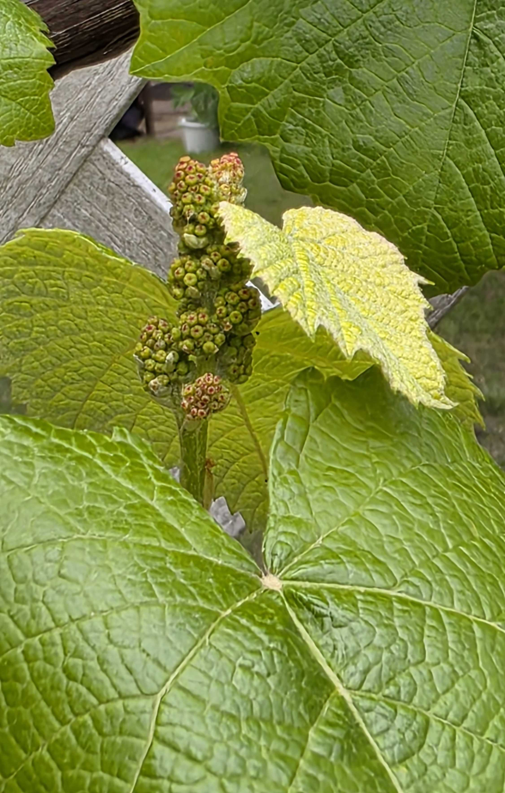
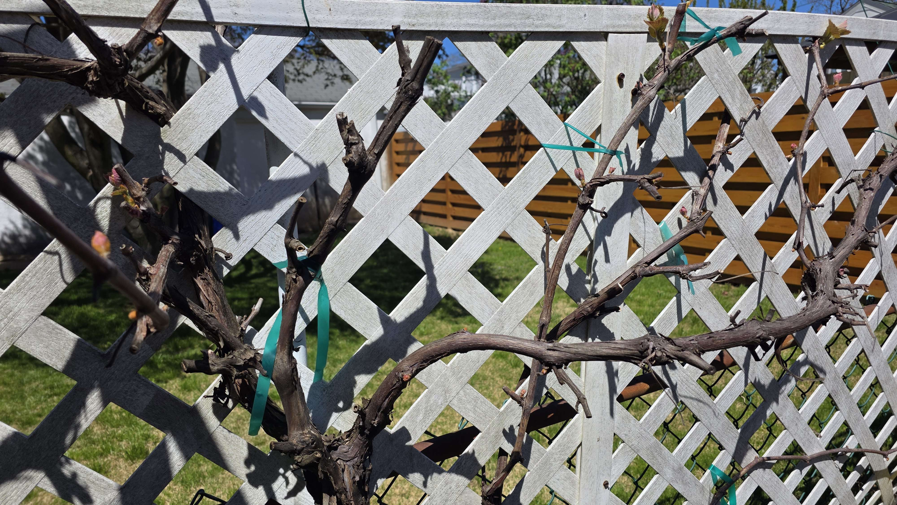
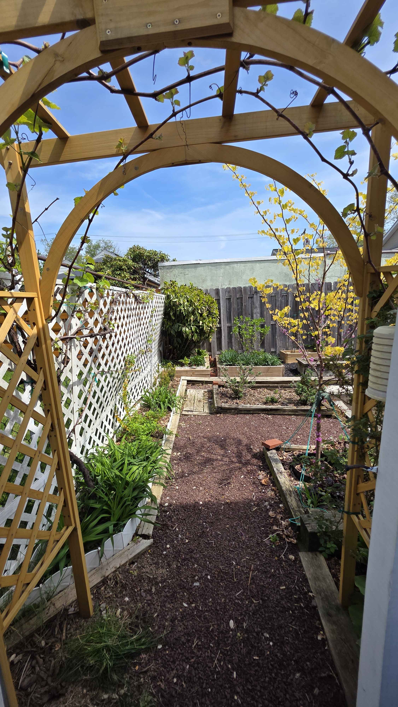
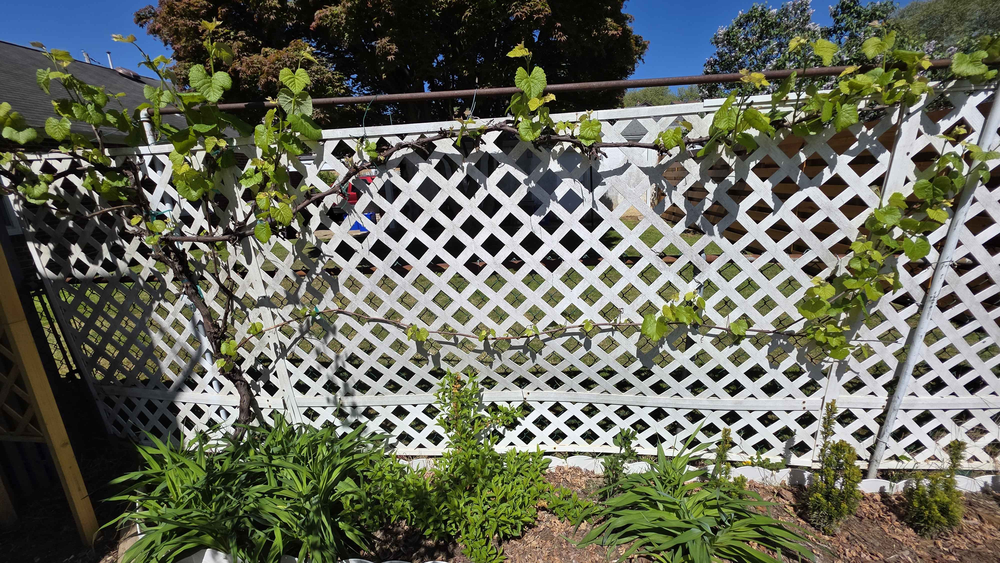
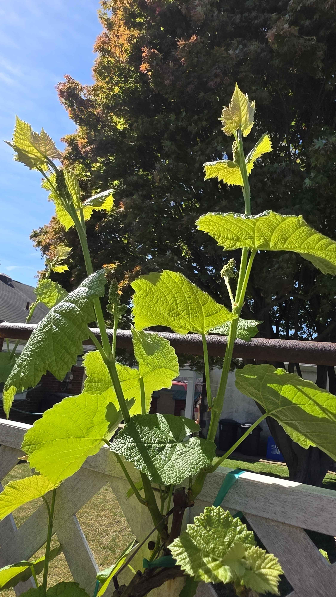

Plant Progress · Grapevine
Grapevine
A current-year record of the arch and its spring training, with the vine beginning to push and the structure still visible.
April 27, 2026
Clusters beginning to declare themselves
The grapevine is no longer just stretching leaves across the lattice; it is already showing distinct clusters tucked between the broad spring leaves. This close view catches the shift from green framework to fruiting intent, with the new pale leaf beside the clusters making the whole moment feel fresh and fast-moving.
The vine is still building its canopy, but the crop is already writing itself in miniature.

- early grape clusters are clearly visible and densely formed
- large leaves look clean, textured, and healthy
- pale new leaf growth shows the vine is still actively pushing
- good close reference for the first real fruit-cluster stage
April 12, 2026
Grape arch in spring training
The grape arch is still in its early-season framework stage, with pruned canes tied out and fresh growth just starting to fill the lattice. It’s the moment where the structure matters most, before the canopy closes in and the whole thing turns into shade.
A grapevine always looks strongest right before it disappears into itself.

- spring training on the arch
- pruned canes are still visible
- fresh growth just starting to fill in
- good year-to-year reference point
April 16, 2026
Through the grape arch into the rest of the garden
Standing under the grape arch looking out, the vine frames the view like a living doorway — new spring growth on the lattice overhead, and the rest of the garden opening up beyond it. It's one of those moments where the structure of the arch stops feeling like a trellis and starts feeling like a threshold between two parts of the yard.
The vine isn't the subject here — it's the frame. The garden behind it does the rest.

- grape arch acts as a framing threshold, not just a vine support
- new spring growth starting on the overhead lattice
- the rest of the garden reads as a layered scene beyond the arch
- good reference for how the vine structure shapes sightlines
April 21, 2026
Lattice starting to disappear behind the vine
The grapevine is beginning to do exactly what you want a grapevine on a white lattice to do, turn structure into backdrop. New growth is stretching farther across the panel, the leaves are broadening, and the long trained arms are starting to read as one connected framework instead of separate canes. It still feels early, but you can already see the screen effect coming.
A little more growth and the lattice stops being the point. The vine takes over the sentence.

- new shoots are extending farther across the top and side sections of the lattice
- leaves are broadening and beginning to soften the hard white grid behind them
- trained vine structure is reading more continuously across the panel
- strong sign that the arch and screen effect will fill in quickly with warm weather
April 19, 2026
Spring push with clusters forming
The grapevine has shifted out of the tentative early phase and into a real spring run now, with long green shoots reaching upward and the first little clusters already showing along the stems. It looks healthy, fast, and fully awake, the kind of growth spurt that makes you feel the arch will close in quickly if warm weather holds.
A few days ago it was framework. Now it looks like it means business.

- multiple upright shoots are extending quickly
- fresh leaves look clean and healthy
- early grape clusters are visible along the stems
- vine has clearly moved from framework into active seasonal growth